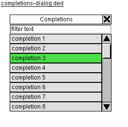

The "Completions" dialog allows the user to see the list of possible
completions returned by the Language Server Protocol server and choose
one to apply.
This dialog is modal.

The input to the dialog is a non-empty ordered list of completions.
Each has a text label, although it need not be unique.
The output of the dialog is the index (within the full list) of the
particular chosen completion, or an indicator that the choice was
canceled.
The dialog has the following elements, top to bottom:
- Filter text: A line text edit into which the user can type to
filter the displayed list of completions. It is initially empty.
- Completion list: A vertically scrolling list box of completions
that contain the filter text as a substring. It allows one item
to be selected at a time, and an item is always selected unless
the list is empty. Initially the first item is selected.
Those elements are tightly packed into the dialog without any padding
between them or between the controls and the dialog edge.
Both the filter text and completion list can receive keyboard focus.
Initially the filter has focus.
These keys are available regardless of which element has focus:
- Tab, Shift+Tab: Move focus among dialog elements.
- Enter: Choose the currently selected list item and close the dialog.
If the list is empty, and hence there is no selected item, pressing
Enter does nothing.
- Esc: Close the dialog without choosing anything.
When the filter has focus:
- Normal text edit controls edit the text. (Implementation note: let
QLineEdit handle this.)
- Down-arrow moves focus to the list box.
When the list box has focus:
- Up/down arrow or "P"/"N" (previous/next) keys moves the selected
item by one, scrolling as needed to keep the selected item in view.
- Page up/down moves and scrolls by a page.